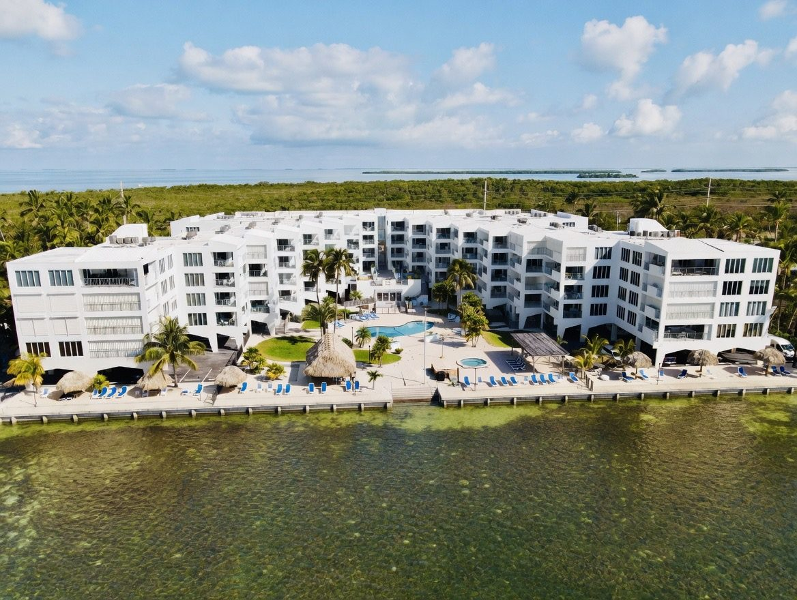

Welcome to paradise
The Palms of Islamorada is a condominium community of 84 units sitting directly on the Atlantic Ocean at Mile Marker 79.9 in the heart of the Florida Keys. Heated pool, hot tub, a tiki hut for gatherings, and plenty of lounge chairs for soaking up the sun.
Palm-lined courtyards, a lobby book exchange, a shared grill area and a pier on the water round out the island lifestyle.
Whether you are an owner taking care of business or a guest here to relax, you are in the right spot.
I'm an OwnerI'm a Guest
Island life, on site
Pool, deck & hot tub
Pool deck with lounge chairs and ocean views.
Tiki hut
A big shared tiki hut for gatherings.
Mini-gyms
Separate his and hers mini-gyms.
Oceanfront
Pier, water access, and a kayak rack and ramp.
Your home on the water
